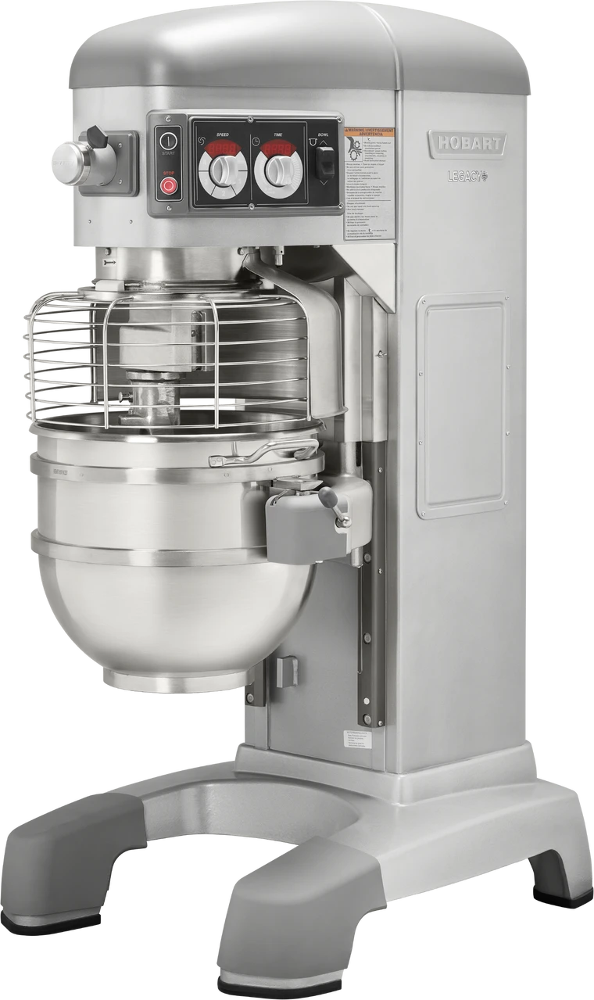
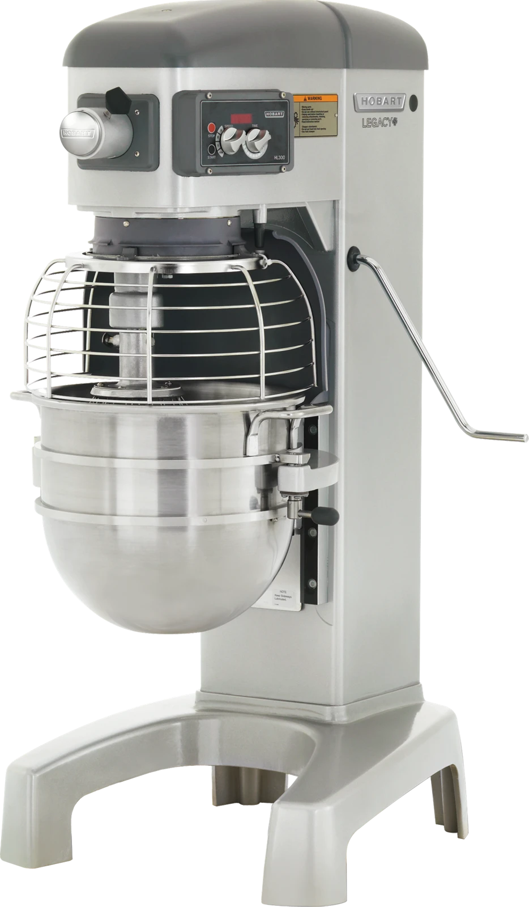
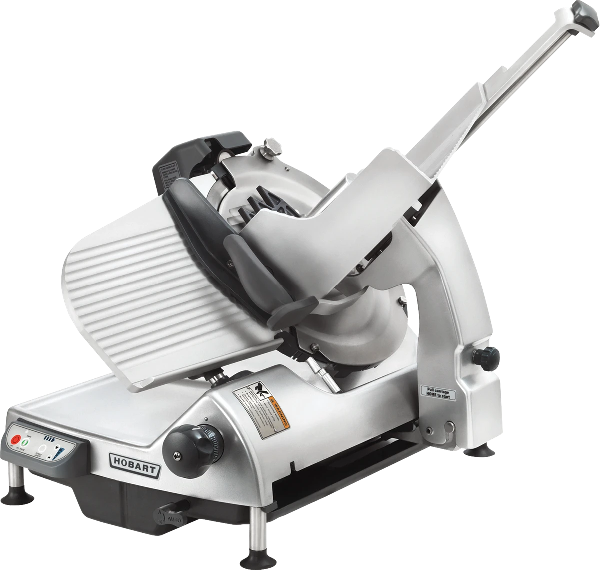
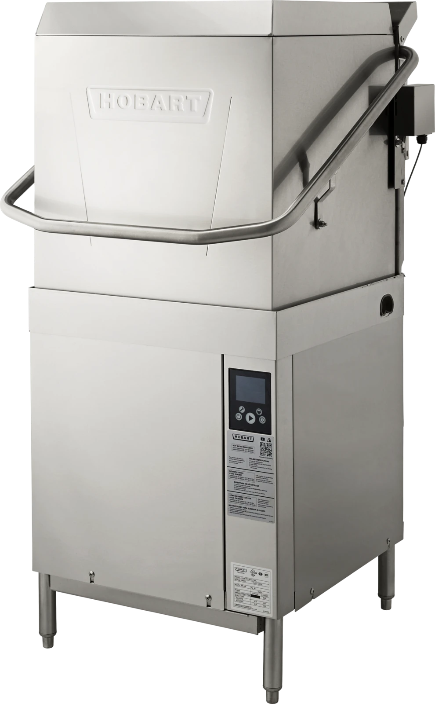
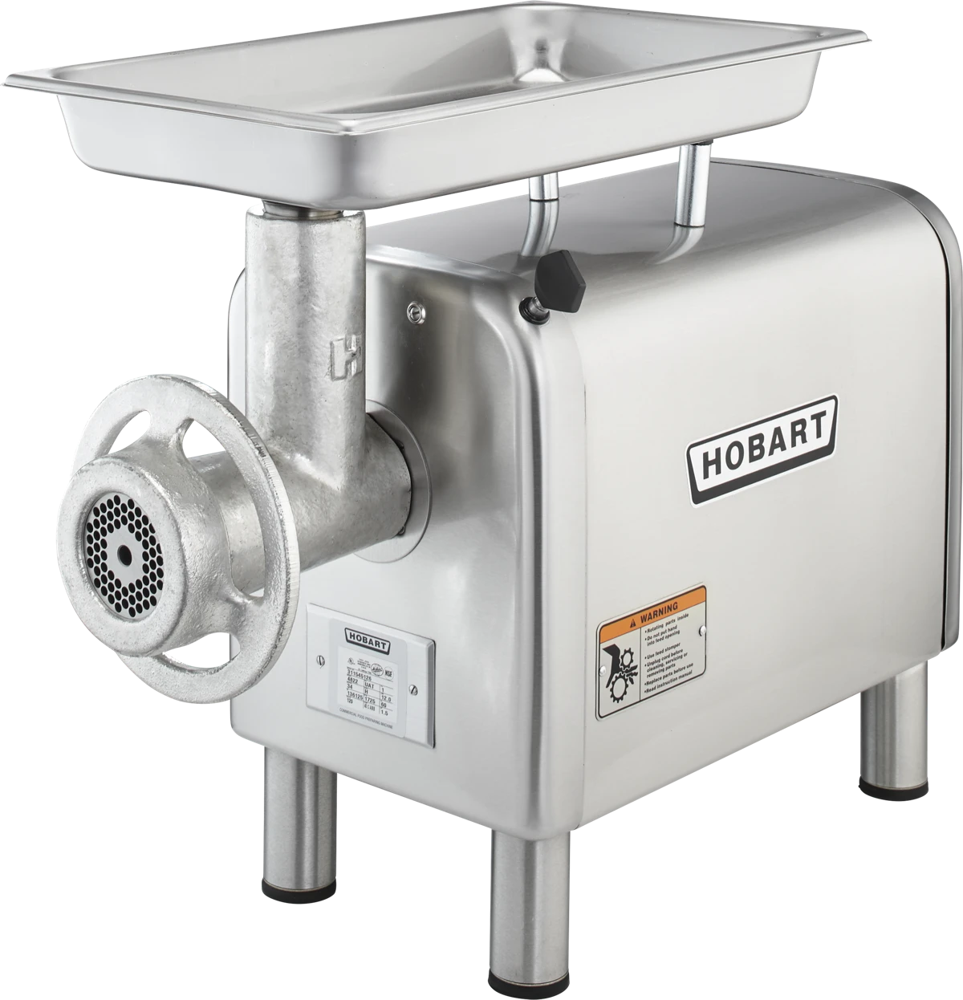

KEEP YOUR KITCHEN MOVING
Hobart repair.
Back to
business.
When essential equipment stops, your kitchen feels it. Start here for repair support for the Hobart machines you depend on.
Support for the heart of your kitchen.

Commercial mixers
THE EQUIPMENT
BEHIND EVERY SERVICE.
EQUIPMENT WE FOCUS ON
A hard-working kitchen.
A machine for every job.
Choose your equipment to see what information to have ready for a service conversation.

Mixers
For the dough, batters and batches your kitchen runs on.
Mixer service
Slicers
Precision equipment at the center of your prep line.
Slicer service
Dishwashers
Keep the wash cycle moving and the dishes coming.
Warewashing service
Food preparation
The grinders and processors behind a productive day.
Food prep serviceLESS GUESSWORK. A CLEAR NEXT STEP.
Good service starts
with the details.
A little information up front helps make your repair conversation more useful.
- 01
Identify the equipment
Find the model and serial number on the machine’s identification plate.
- 02
Tell us what changed
Note the symptoms, when they started and any error message displayed.
- 03
Confirm service details
Discuss your location, equipment needs and appointment availability before booking.
LET’S GET TO WORK
Your next step
starts here.
Have your equipment details ready so a service provider can understand the problem and discuss your options.
SERVICE INFORMATION
Hobart equipment repair
Contact details and service coverage will be added here. Service booking is not yet available through this site.
Have these details ready
- Equipment model and serial number
- A brief description of the issue
- Business location and preferred contact